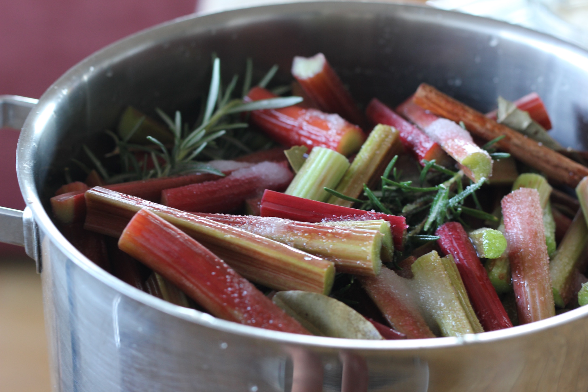

Poached Rhubarb
Rhubarb: it grows in abundance, cooks in minutes, and tastes delicious in just about anything. Pop it on your cereal in the morning, scoop it over yoghurt for a snack, bake it into a crumble for dessert. I like to add some herbs to make it fragrant.

Ingredients
- 7-8 large sticks of rhubarb, cut into 2 inch batons
- A handful of granulated sugar
- The juice of half a lemon
- Cinnamon stick
- 2 bay leaves
- Stick of rosemary
Pop everything into a saucepan with a splash of water, pop the lid on and bring slowly to a simmer. Take the lid off once it starts bubbling and give it a stir so the heat distributes evenly. When the rhubarb has broken down (5 minutes) remove the fruit with a slotted spoon and continue to boil down all the delicious liquid for 5-10 minutes until it's halved in volume. Store it in a sterilised jar in the fridge for up to 4 weeks, or store in zip-lock bags in the freezer.